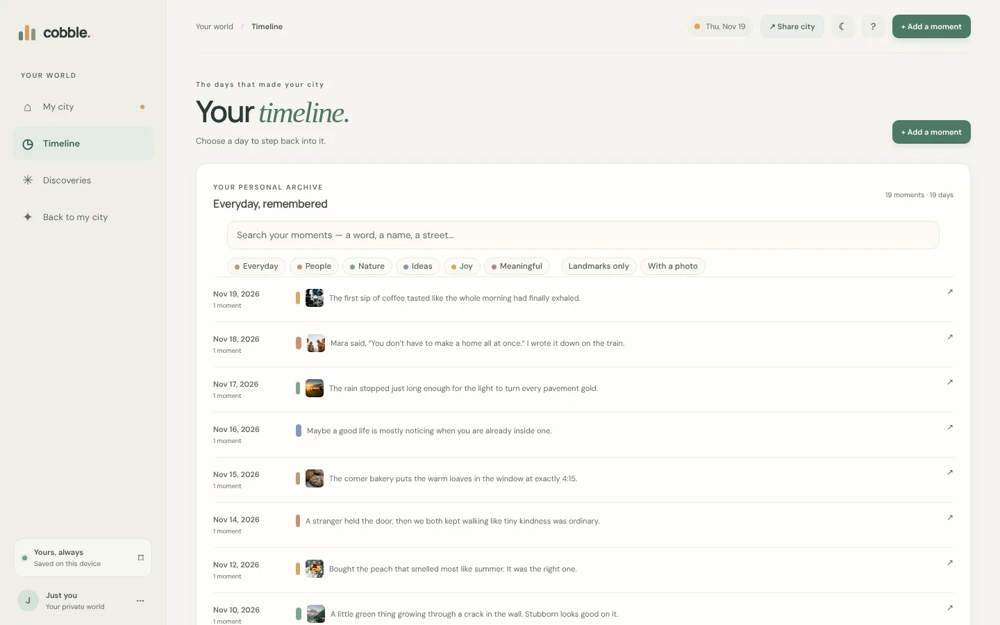

ઊંચાઈનો અર્થ છે
કોઈ ક્ષણને નાની વિગત, કંઈક જે મહત્ત્વનું હતું, અથવા માઈલનો પથ્થર — એમ ચિહ્નિત કરો. માઈલના પથ્થર ઊંચા ઊભા રહે છે. મહિનાઓમાં સ્કાયલાઈન એ નકશો બની જાય છે કે તમને ખરેખર કોની પરવા હતી, નહીં કે કોની પરવા કરવાનો ઈરાદો હતો.
તમારા પોતાના દિવસોનું એક ખાનગી શહેર
કોબલ તમે નોંધો છો તે નાની વસ્તુઓને એવા શહેરમાં ફેરવે છે જે તમે રોજ થોડું થોડું બનાવો છો. એક ક્ષણ સાચવો: બારીમાં પડેલી ગરમ બ્રેડ, કોઈએ કહેલી એક વાત, ભીના ફૂટપાથ પર પડતો પ્રકાશ. એક ઈમારત ઊપસી આવે છે. આમ ચાલુ રાખો, અને તમારું સાદું જીવન એક જગ્યા જેવું લાગવા લાગે છે.
દરેક બ્લોક એ ક્ષણ છે જે તમે સાચવી. રંગ કહે છે કે એ કેવા પ્રકારની ક્ષણ હતી. કોબલ કરવું એટલે હાથમાં જે હોય તેનાથી કંઈક બનાવવું.
કોબલ સુંદર ફોન્ટવાળી ડાયરી નથી. અહીં ભૂમિતિનો અર્થ છે, એટલે વર્ષ સ્ક્રોલ કરવાને બદલે એક નજરમાં વંચાય છે.
કોઈ ક્ષણને નાની વિગત, કંઈક જે મહત્ત્વનું હતું, અથવા માઈલનો પથ્થર — એમ ચિહ્નિત કરો. માઈલના પથ્થર ઊંચા ઊભા રહે છે. મહિનાઓમાં સ્કાયલાઈન એ નકશો બની જાય છે કે તમને ખરેખર કોની પરવા હતી, નહીં કે કોની પરવા કરવાનો ઈરાદો હતો.
દરેક ક્ષણ છ ઝિલ્લામાંથી એકમાં જાતે દાખલ થાય છે: રોજિંદી વિગત, લોકો, બહાર, વિચારો, નાની ખુશીઓ, કંઈક અર્થપૂર્ણ. એકસરખા ઝિલ્લા નજીક બસે છે, એટલે શહેર બતાવે છે કે તમારું ધ્યાન વારંવાર ક્યાં જાય છે.
જો એક જ વાત વારંવાર થતી હોય (સવા ચાર વાગ્યાની બ્રેડ, મેપલ સ્ટ્રીટનો વૃદ્ધ કૂતરો), તો એ કહો. પાછા આવતા વિષયોને પહોળી ઈમારતો અને વધુ બારીઓ મળે છે, અને કોબલ એમનાં નામ તમને પાછાં આપવા લાગે છે.
એક ઝિલ્લો પસંદ કરો. એક બ્લોક ઊપસે છે, બરાબર એવો જ જેવો તમારા શહેરમાં ઊપસશે. છ વાર દબાવો અને એ કોઈ જગ્યા જેવું લાગવા લાગે છે.
0 આ બ્લોકમાં ક્ષણો
શ્રેણીઓ જાણી જોઈને ઢીલી રાખી છે. અહીં કંઈ પણ તમને દિવસને દસમાંથી માર્ક આપવાનું કહેતું નથી.
બેકરીની સવા ચાર વાગ્યાની બ્રેડ. જે બસ ડ્રાઈવરે રાહ જોઈ. સાધારણ દિવસની નાની નાની મશીનરી.
ટ્રેનમાં કોઈએ જે કહ્યું. કોઈએ પકડી રાખેલું દરવાજું. એ રાતનું જમવાનું જ્યાં મીણબત્તી હોલવાઈ ગઈ.
વરસાદ પછી સોનેરી થઈ ગયેલો ફૂટપાથ. દીવાલની તિરાડમાંથી ડોકિયું કરતું લીલું પાન.
જૂની પુસ્તકની એ લીટી જે પરવાનગી જેવી લાગી. એ વાત જેની આસપાસ તમે વારંવાર ફરો છો.
એ પીચ જેમાં સૌથી વધુ ઉનાળાની સુગંધ હતી. સત્તર વર્ષની ઉંમરનું કોઈ ગીત.
નવા ટેબલ પર પહેલું જમવાનું. એ દિવસ જ્યારે મહોલ્લો પોતાનો લાગવા લાગ્યો.
આ રિપોઝિટરીની સાચી તસવીરો, 1440×900 પર અને એક ફોન પર. નમૂનાનું શહેર એપ સાથે આવે છે, એટલે એમાંથી કંઈ પણ બનાવટી નથી.




કોબલનું કોઈ ખાતું નથી, કારણ કે કોબલનો કોઈ સર્વર જ નથી. તમારો સંગ્રહ તમારા બ્રાઉઝરની પોતાની સ્ટોરેજમાં રહે છે. બહાર જાય છે ફક્ત એ ફાઈલ જે તમે જાતે એન્ક્રિપ્ટ કરો છો.
ક્ષણો IndexedDBમાં સાચવાય છે, અને બ્રાઉઝર ના પાડે તો localStorageમાં. તસવીરો સાચવતાં પહેલાં ડિવાઈસ પર જ નાની કરવામાં આવે છે. કંઈ પણ ક્યારેય અપલોડ થતું નથી.
શેર કરવાથી બને છે એક .cobble ફાઈલ: AES-256-GCM, કી તમારા 6–12 અંકના પિનમાંથી PBKDF2-SHA-256 દ્વારા 2,50,000 વાર ફેરવીને બને છે. ફાઈલ અને પિન અલગ અલગ મોકલો.
કોઈ એનાલિટિક્સ નહીં, કોઈ કૂકી નહીં, તમને ટ્રેક કરતો કોઈ ફોન્ટ નહીં, તમારા આંકડા પર કોઈ બહારની સ્ક્રિપ્ટ નહીં. પેજ ફક્ત સ્ટોરેજ અને Web Crypto વાળું બ્રાઉઝર માગે છે.
સાઈટ ડેટા કાઢી નાખવાથી શહેર પણ જતું રહે છે. બ્રાઉઝર સાફ કરતાં પહેલાં બેકઅપ નિકાસ કરો — અને ફાઈલ એવી જગ્યાએ રાખો જેના પર તમને ભરોસો હોય.
વિગતવાર વાંચો: ગોપનીયતા અને સુરક્ષા · આંકડાનું ઢાંચું
મફત, ઓફલાઈન, ખાતા વગર — અને એવું જ રહેશે. એની પાછળ કંઈ પણ બંધ નથી.

drsohilboi@ybl
 કોઈ પણ યુપીઆઈ એપથી સ્કેન કરો
કોઈ પણ યુપીઆઈ એપથી સ્કેન કરો